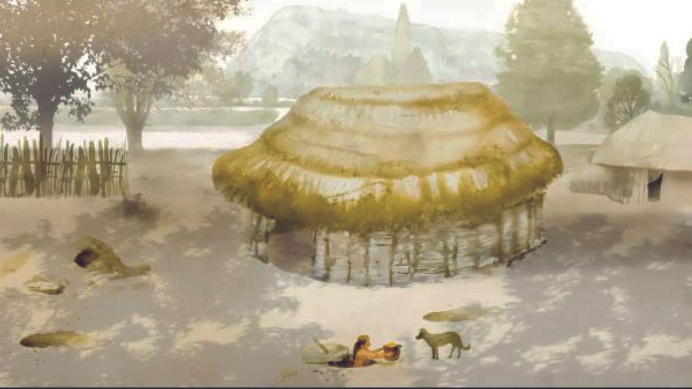
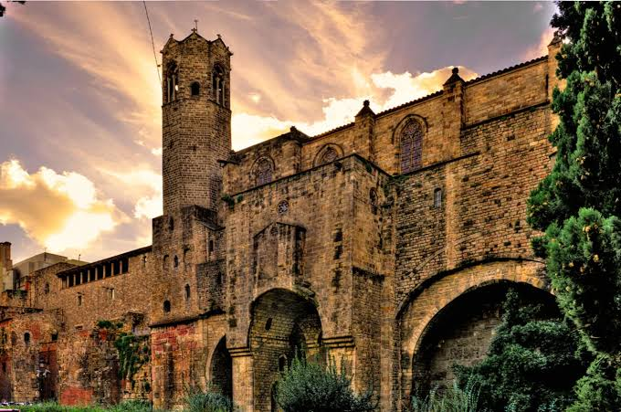
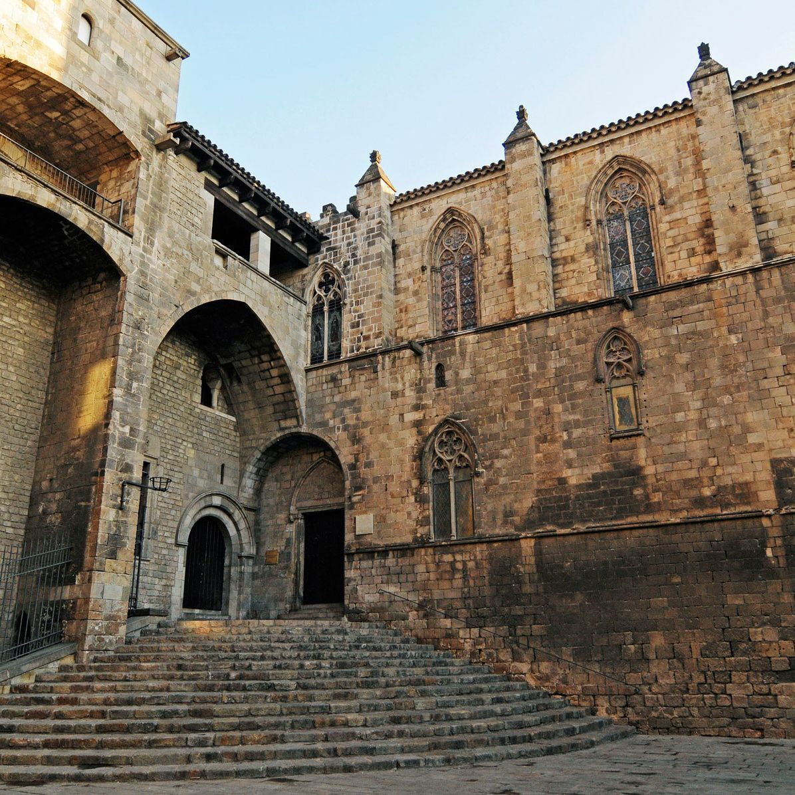

Historia de la ciudad
Orígenes de la ciudad
La historia de Barcelona se remonta a más de 2.000 años. Aunque existen indicios de asentamientos anteriores, la ciudad comenzó a desarrollarse durante la época romana.
Los primeros habitantes

Los primeros habitantes de Barcelona fueron los ibéricos, seguidos por los romanos que fundaron la ciudad en el siglo II a.C.
La época romana

Durante la época romana, Barcelona se convirtió en un importante centro comercial y militar, con una muralla que protegía la ciudad.
La Barcelona medieval

Durante la época medieval, Barcelona se desarrolló como un importante centro económico y cultural, con el crecimiento de su población y la construcción de importantes edificios religiosos y civiles.
La Barcelona moderna

En la época moderna, Barcelona experimentó un gran crecimiento industrial y urbanístico, con la construcción de nuevos barrios y la modernización de su infraestructura.
Evolución histórica
Contenido sobre su evolución...
Acontecimientos importantes
Contenido sobre los acontecimientos...
Patrimonio histórico
Contenido sobre los monumentos...